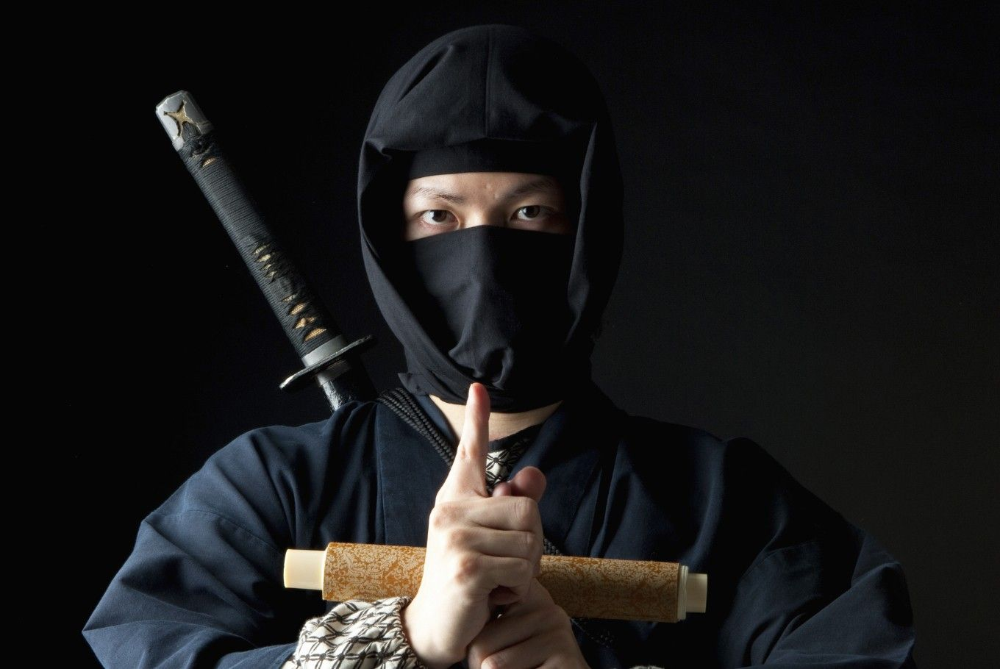

<div class="event-info">
 <div>
 <p>نین جوتسو  یک هنر رزمی ژاپنی است که در لغت به معنای حرکت پنهانی است و در آن استراتژی‌ها و تاکتیک‌های جنگ‌های نامتعارف و چریکی و روش‌های جاسوسی و پنهان‌کاری آموزش داده می‌شود.</p>
 
 <p>از برجسته‌ترین خصوصیات نین جوتسو این است که بدن و جسم را پایگاه فکر و اندیشه می‌داند و کالبد آدمی را آموزش می‌دهد تا با آن روح را بسازد. اصول اصلی و اجرای تکنیک‌ها نیاز به سرعت، تعادل، تمرکز، قدرت و تنظیم زمان تنفس و کنترل آن دارد و بدون آن فاقد ارزش است.</p>
 </div>
</div>